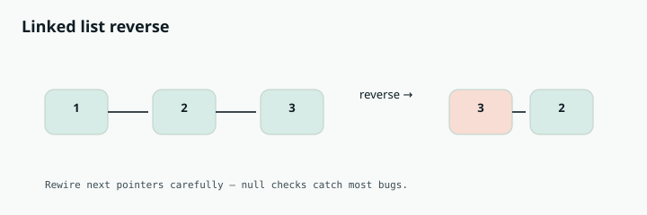

Competitive Programming
Chapter 08
Linked lists

L I N E A R A N D L I N K E D
A linked list is a chain of nodes. Each node holds a value and a pointer to the next node. There is no index and no jumping around; to reach the fifth node you walk through the first four. The whole skill here is managing pointers without losing the chain. before 1 2 3 null after 1 2 3 null Reversing means flipping every arrow to point backward, one node at a time.
R E A C H F O R L I N K E D L I S T T E C H N I Q U E S W H E N Y O U S E E
"Reverse the list", "find the middle", "detect a cycle", "merge two sorted lists", "remove the Nth node from the end." The two workhorses are the fast-and-slow pointer (for middle and cycle) and the dummy head node (to simplify insertions and deletions at the front).
The node definition
class ListNode:
def __init__(self, val=0, next=None):
self.val = val
self.next = next
class ListNode {
int val;
ListNode next;
ListNode(int val) { this.val = val; }
}
Worked example: reverse a linked list
Walk the list. At each node, remember the next node, then point the current node backward at the previous node, then step everything forward. The trap is losing the rest of the chain, so you must save next before you overwrite it.
def reverse_list(head):
prev = None
curr = head
while curr:
nxt = curr.next # save the rest of the chain first
curr.next = prev # flip the arrow backward
prev = curr # move prev forward
curr = nxt # move curr forward
return prev # prev is the new head
ListNode reverseList(ListNode head) {
ListNode prev = null, curr = head;
while (curr != null) {
ListNode next = curr.next; // save the rest first
curr.next = prev; // flip the arrow
prev = curr; // advance prev
curr = next; // advance curr
}
return prev; // new head
}
Fast and slow pointers: find the middle, and detect a cycle
Move one pointer one step at a time and another two steps at a time. When the fast one reaches the end, the slow one is exactly in the middle. And if the list secretly loops back on itself, the fast pointer will eventually lap the slow one and they will meet. This is called Floyd's cycle detection, and it uses no extra memory.
def find_middle(head):
slow = fast = head
while fast and fast.next:
slow = slow.next # one step
fast = fast.next.next # two steps
return slow # middle node
def has_cycle(head):
slow = fast = head
while fast and fast.next:
slow = slow.next
fast = fast.next.next
if slow is fast: # they met, there is a loop
return True
return False
ListNode findMiddle(ListNode head) {
ListNode slow = head, fast = head;
while (fast != null && fast.next != null) {
slow = slow.next; // one step
fast = fast.next.next; // two steps
}
return slow; // middle
}
boolean hasCycle(ListNode head) {
ListNode slow = head, fast = head;
while (fast != null && fast.next != null) {
slow = slow.next;
fast = fast.next.next;
if (slow == fast) return true; // they met
}
return false;
}
The dummy node trick: merge two sorted lists
When you build a new list or delete from the front, having a fake node in front of the real head saves you from special-casing the first element. You always attach to tail.next and return dummy.next at the end.
def merge_two_lists(a, b):
dummy = ListNode() # fake head so we never special-case the start
tail = dummy
while a and b:
if a.val <= b.val:
tail.next = a
a = a.next
else:
tail.next = b
b = b.next
tail = tail.next
tail.next = a or b # attach whatever is left
return dummy.next
ListNode mergeTwoLists(ListNode a, ListNode b) {
ListNode dummy = new ListNode(0); // fake head
ListNode tail = dummy;
while (a != null && b != null) {
if (a.val <= b.val) { tail.next = a; a = a.next; }
else { tail.next = b; b = b.next; }
tail = tail.next;
}
tail.next = (a != null) ? a : b; // attach the remainder
return dummy.next;
}
W A T C H O U T
The number one linked list bug is a null pointer error. Before you write node.next.next , be sure node.next is not null. In the fast-and-slow loop, always check fast and fast.next before stepping, in that order. And when reordering pointers, save what you need before you overwrite it, or the tail of your list vanishes.
Deeper Intuition
Why a gap of n finds the end
Two pointers that stay exactly n nodes apart turn "nth from the end" into a single pass. Start the lead pointer n steps ahead, then move both together. When the lead reaches the last node, the trailing pointer is sitting right before the node you want to remove, because the fixed gap guarantees it. A dummy head in front of the list means even removing the first node needs no special case. keep the two pointers a fixed gap of n apart trail lead 1 2 3 4 5 skip node 4 Start one pointer n nodes ahead. When it reaches the end, the other sits just before the target.
Another worked example: Remove Nth Node From End
Delete the nth node counting from the end in one pass. Put a lead pointer n steps ahead of a trailing pointer, then advance both until the lead hits the end. The trailing pointer now points at the node just before the target, so you skip it.
def remove_nth_from_end(head, n):
dummy = ListNode(0, head)
lead = trail = dummy
for _ in range(n):
lead = lead.next # move lead n steps ahead
while lead.next: # move both until lead is last
lead = lead.next
trail = trail.next
trail.next = trail.next.next # skip the target node
return dummy.next
ListNode removeNthFromEnd(ListNode head, int n) {
ListNode dummy = new ListNode(0, head);
ListNode lead = dummy, trail = dummy;
for (int i = 0; i < n; i++) lead = lead.next; // n ahead
while (lead.next != null) { // move together
lead = lead.next;
trail = trail.next;
}
trail.next = trail.next.next; // skip target
return dummy.next;
}
GOING DEEPER
What kinds of problems this solves
U S E T H I S P A T T E R N F O R
Problems where you rewire pointers rather than move data: reversing, detecting or locating a cycle, finding the middle or the kth from the end, and merging or reordering lists.
Two ideas cover most linked list problems. The first is the dummy head: you make a fake node that points at the real head, build your result off the dummy, and return dummy.next. This removes all the annoying special cases around an empty list or changing the first node. The second is two pointers with a gap or a speed difference. A fast pointer that moves two steps and a slow pointer that moves one will meet inside any cycle, and the slow pointer lands on the middle when the fast one reaches the end. To find the kth node from the end, start one pointer k Reversal shows up either iteratively with three pointers (previous, current, next) or recursively. Cycle problems use Floyd's tortoise and hare, and finding the cycle start needs the second phase where you reset one pointer to the head. Merging always benefits from the dummy node. Save the next pointer before you overwrite it during reversal, or you will lose the rest of the list. Guard against null at every step, especially the fast pointer moving two at a time. Use a dummy head whenever the first node might change, so you never special case the head. After building a new list, remember to terminate it by setting the final next to null when needed.
Reversing the list 1 to 2 to 3. We keep a previous pointer and, at each node, flip its next to point